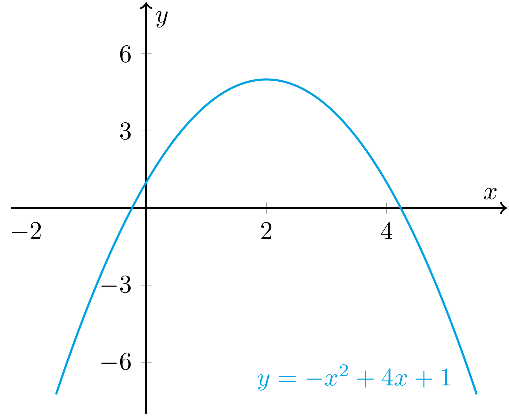

Practice problems - Chapter 1
Exercise 1.1 Find and classify the stationary points of the following functions.
- The function \(f \, \colon \mathbb{R} \to \mathbb{R}\) given by \(f(x) = x^{3} - 3x^{2} + 2x\)
- The function \(g \colon \mathbb{R} \to \mathbb{R}\) given by \(g(x) = 5x^{3} - 3x^{5}\)The function \(h \colon \mathbb{R} \to \mathbb{R}\) given by \(h(x) = (x^2 + x - 1)/(x^{2} + 1)\)
Show/hide solution
Solution (part a). If \(x\) is a stationary point of \(f\), then \(f'(x) = 0\), which in this case is when \(3x^{2} - 6x + 2 = 0\). Solutions to this equation are \(x = 1 - 1/\sqrt{3}\) and \(x = 1 + 1/\sqrt{3}\). By the second derivative test, since \(f''(x) = 6x - 6\) is negative at \(x = 1 - 1/\sqrt{3}\), we have a local maximum at \(x = 1 - 1/\sqrt{3}\), and since \(f''(x)\) is positive at \(x=1+1/\sqrt3\), we have a local minimum at \(x=1+1/\sqrt3\).
Since \(f\) is a polynomial, it is continuous, and since\[\begin{align*} \lim_{x \to \infty} f(x) = \infty \quad \text{and} \quad \lim_{x \to -\infty} f(x) = -\infty, \end{align*}\]we have that neither \(x = 1 - 1/\sqrt{3}\) nor \(x = 1 + 1/\sqrt{3}\) are global extrema.Solution (part b). If \(x\) is a stationary point, then \(g'(x) = 0\), which in this case is when \(15x^{2} - 15x^{4} = 0\), or equivalently, if \(x^{2}(1 - x^{2}) = 0\). Solutions to this equation are \(x= -1\), \(x = 0\) and \(x = 1\). By the second derivative test, since \(g''(x) = 30x - 60x^{3}\), at \(x = -1\), we have \(g''(x) = 30 > 0\), and so \(x = -1\) is a local minimum; at \(x=1\), we have \(g''(x) = -30 < 0\), and so \(x = 1\) is a local maximum; at \(x=0\) we have \(g''(x) = 0\), and so the second derivative test is inconclusive.
Let us examine this latter case more closely. Observe that\[\begin{align*} \lim_{\epsilon \to 0} \frac{g(\epsilon)}{5\epsilon^{3}} = \lim_{\epsilon \to 0} \frac{5\epsilon^{3} - 3\epsilon^{5}}{5\epsilon^{3}} = 1. \end{align*}\]Therefore, if \(\epsilon\) is arbitrarily small and positive, then \(g(\epsilon) > 0\) since \(5\epsilon^{3} > 0\), and so \(g(\epsilon) > 0 = g(0)\). Similarly, if \(\epsilon\) is arbitrarily small and negative, then \(g(\epsilon) < 0\) since \(5\epsilon^{3} < 0\), and so \(g(\epsilon) < 0 = g(0)\). This implies that \(x=0\) is a saddle point.
Since, \(g\) is a polynomial, it is continuous, and since\[\begin{align*} \lim_{x \to \infty} g(x) = -\infty \quad \text{and} \quad \lim_{x \to -\infty} g(x) = \infty, \end{align*}\]neither \(x = -1\), \(x = 0\) nor \(x = 1\) are global extrema.Solution (part c). If \(x\) is a stationary points, then \(h'(x) = 0\). By the quotient rule,\[\begin{align*} h'(x) = \frac{(2x+1)(x^{2}+1) - (x^{2} + x - 1)(2x)}{(x^{2} + 1)^{2}}=\frac{-x^{2} + 4x + 1}{(x^{2} + 1)^{2}} \end{align*}\]Thus, \(x\) is a stationary point if \(-x^{2} + 4x + 1 = 0\). Solutions to this equation are \(x = 2 - \sqrt{5}\) and \(x = 2 + \sqrt{5}\). Observing that the graph of \(y = -x^{2} + 4x + 1\) is a parabola, a quick sketch shows that \(x = 2 - \sqrt{5}\) is a local minimum and \(x = 2 + \sqrt{5}\) is a local maximum, see Figures 1.3. Note you could use the second derivative test here but \(h''\) is not easy to work with.FIGURE 1.3: Sketch of the graph of \(y = -x^{2}+4*x+1\).
Show/hide image source code
%%Image generated using \LaTeX package *tikz*.%% \documentclass[convert={density=600,outext=.png}]{standalone} \include{preview} \usepackage[pdftex,active,tightpage]{preview} \usepackage{amsmath} \usepackage[dvipsnames]{xcolor} \usepackage{tikz} \usetikzlibrary{matrix} \usetikzlibrary{decorations.markings} \usepackage{pgfplots} \pgfplotsset{every axis/.append style={ axis x line=middle, % put the x a xis in the middle axis y line=middle, % put the y axis in the middle axis line style={thick,->,color=black}, % arrows on the axis xlabel={$x$}, % default put x on x-axis ylabel={$y$}, % default put y on y-axis xtick = {-2,2,4}, ytick = {-6,-3,3,6} %add tickmarks }} % \begin{document} \begin{preview} %% TIKZ_CODE %% \begin{tikzpicture} \begin{axis}[ xmin=-2.25,xmax=6, ymin=-8,ymax=8, % grid=both, % adds gridlines ] \addplot [thick, domain=-1.5:5.5, samples=500, color=Cerulean, variable=\t] ({t}, {-t*t + 4*t + 1}); \end{axis} \node at (4.75, 0.5) {${\color{Cerulean}y = -x^2+4x+1}$}; \end{tikzpicture} \end{preview} \end{document}Exercise 1.2 Determine the order four Taylor polynomials centered at zero and generated the following functions.
- The function \(f \, \colon \, \mathbb{R} \to \mathbb{R}\) given by \(f(x) =\sin(2x)\)
- The function \(g \, \colon \, (-1/2, 1/2) \to \mathbb{R}\) given by \(g(x)= 1/(1+2x)\)
- The function \(h \, \colon \, (-2, 2) \to \mathbb{R}\) given by \(h(x) = 1/(2+x)\)
- The function \(k \, \colon \, \mathbb{R} \to \mathbb{R}\) given by \(k(x)=\mathrm{e}^{2x}\cos(x)\)
- The function \(q \, \colon \, \mathbb{R} \to \mathbb{R}\) given by \(q(x)= 2/(2-\sin(x))\)
Exercise 1.3 Write down Taylor series centered at zero and generated by the following functions.
- The function \(f \, \colon \, \mathbb{R} \to \mathbb{R}\) given by \(f(x)=\mathrm{e}^x\)
- The function \(g \, \colon \, \mathbb{R} \to \mathbb{R}\) given by \(g(x)=\sin(x)\)
- The function \(h \, \colon \, \mathbb{R} \to \mathbb{R}\) given by \(h(x)=\cos(x)\)
- The function \(k \, \colon \, (-1, 1) \to \mathbb{R}\) given by \(k(x)=1/(1-x)\)
- The function \(r \, \colon \, \mathbb{R} \to \mathbb{R}\) given by \(r(x)=x^2+x+1\)
Show/hide solution
Solution (part a). If \(f \, \colon \, \mathbb{R} \to \mathbb{R}\) is given by \(f(x,y)=\mathrm{e}^{x}\), then the Taylor series generate by \(f\) centered at zero is\[\begin{align*} 1+x+\frac{x^2}{2!}+\dots+\frac{x^n}{n!}+\dots =\sum_{n\geq0}\frac{x^{n}}{n!}. \end{align*}\]Solution (part b). If \(g \, \colon \, \mathbb{R} \to \mathbb{R}\) is given by \(g(x)=\sin(x)\), then the Taylor series generate by \(f\) centered at zero is\[\begin{align*} x-\frac{x^3}{3!}+\frac{x^5}{5!}+\dots+ (-1)^n\frac{x^{2n+1}}{(2n+1)!} +\dots =\sum_{n\geq0}\frac{(-1)^nx^{2n+1}}{(2n+1)!} \end{align*}\]Solution (part c). If \(h \, \colon \, \mathbb{R} \to \mathbb{R}\) is given by \(h(x)=\cos(x)\), then the Taylor series generate by \(f\) centered at zero is\[\begin{align*} 1-\frac{x^2}{2!}+\frac{x^4}{4!}+\dots+(-1)^n\frac{x^{2n}}{(2n)!}+\dots =\sum_{n\geq0}\frac{(-1)^nx^{2n}}{(2n)!} \end{align*}\]Solution (part d). If \(k \, \colon \, (-1, 1) \to \mathbb{R}\) is given by \(k(x) = 1/(1-x)\), then the Taylor series generate by \(k\) centered at zero is\[\begin{align*} 1+ x+x^2+\dots+x^n+\dots =\sum_{n\geq0} x^n \end{align*}\]Solution (part e). If \(r \, \colon \, (-1, 1) \to \mathbb{R}\) is given by \(r(x) = x^2+x+1\), then the Taylor series generate by \(r\) centered at zero is \(x^2+x+1\).
Exercise 1.4 Find the Taylor series generated by the following functions and centered at the given point \(c\).
- The function \(f\,\colon \, \mathbb{R} \to \mathbb{R}\) given by \(f(x)=\mathrm{e}^x\) and the point \(c=-1\)
- The function \(f\,\colon \, \mathbb{R} \to \mathbb{R}\) given by \(f(x)=\mathrm{e}^x\) and the point \(c=-3\)
- The function \(f\,\colon \, \mathbb{R} \to \mathbb{R}\) given by \(f(x)=x^2+x+1\) and the point \(c=-1\)
- The function \(f\,\colon \, \mathbb{R} \to \mathbb{R}\) given by \(f(x)=x^3 + 3x + 2\) and the point \(c=3\)
- The function \(f\,\colon \, \mathbb{R} \to \mathbb{R}\) given by \(f(x)=\sin(x)\) and the point \(c=\pi/2\)
- The function \(f\,\colon \, \mathbb{R} \to \mathbb{R}\) given by \(f(x)=\sin(x)\) and the point \(c=-\pi\)
Exercise 1.5 Consider the following statement.Let \(f \colon \mathbb{R} \to \mathbb{R}\) be the \(2\pi\)-periodic function, which for \(x \in [-\pi, \pi)\) is given by\[\begin{align*} f(x) = \begin{cases} \hphantom{-}1 & \text{if} \; x \in [0, \pi),\\ -1 & \text{if} \; x \in [-\pi, 0). \end{cases} \end{align*}\]The Fourier series of \(f\) converges pointwise to \(f\).Determine if the statement is true or false, giving a brief justification for your answer.Show/hide solution
Solution. Since \(f(x) \in \{-1, 1\}\), for all \(x \in \mathbb{R}\), we have that \(-1 \leq f(x) \leq 1\), for all \(x \in \mathbb{R}\), and thus \(f\) is a bounded function. Further, by definition \(f\) is a \(2\pi\)-periodic function, and since \(f\) is piecewise constant, and since a piecewise constant implies piecewise smooth, \(f\) is piecewise smooth. Therefore, the hypotheses of Dini’s Theorem are satisfied. Thus, the Fourier series of \(f\) at \(x = 0\) converges to
\[\begin{align*} \frac{f(0^{+}) + f(0^{-})}{2} = \frac{(\lim_{x \to 0^{+}} f(x)) + (\lim_{x \to 0^{-}} f(x))}{2} = \frac{(\lim_{x \to 0^{+}} 1) + (\lim_{x \to 0^{-}} -1)}{2} = \frac{1+ -1}{2} = 0. \end{align*}\]As \(f(0) = 1 \neq 0\), the Fourier series of \(f\) does not converge pointwise to \(f\), and hence the statement is false.